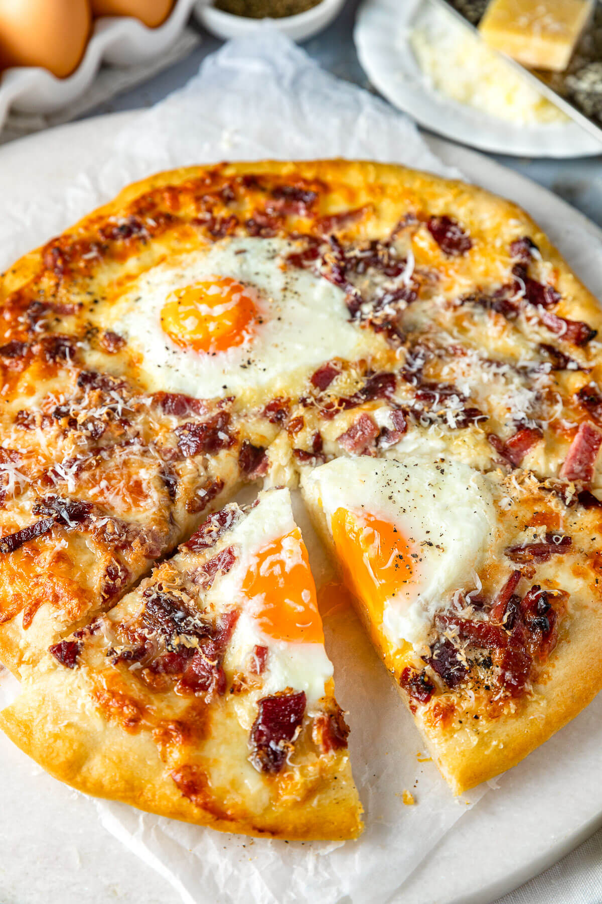

Carbonara Pizza

Decription:
A delicious pizza made with bacon, cream, cheese and other ingredients
Ingredients:
- Pizza Dough
- Eggs
- Bacon
- Cheeses
- Black pepper
Steps
-
Go easy on the salt: The bacon, parmesan, and pecorino are salty enough. You don’t need any additional salt.
-
Precook the bacon: Precooking the bacon keeps it from drowning your pizza in rendered fat. Cook the bacon until it is just crispy. If you cook it too long in the skillet, it will burn in the oven.
-
Watch the eggs: Keep an eye on the pizza as it cooks to ensure the eggs are done to your liking. Start checking after 5 minutes. If you prefer fully cooked eggs, leave the pizza in the oven for a couple more minutes.
Home